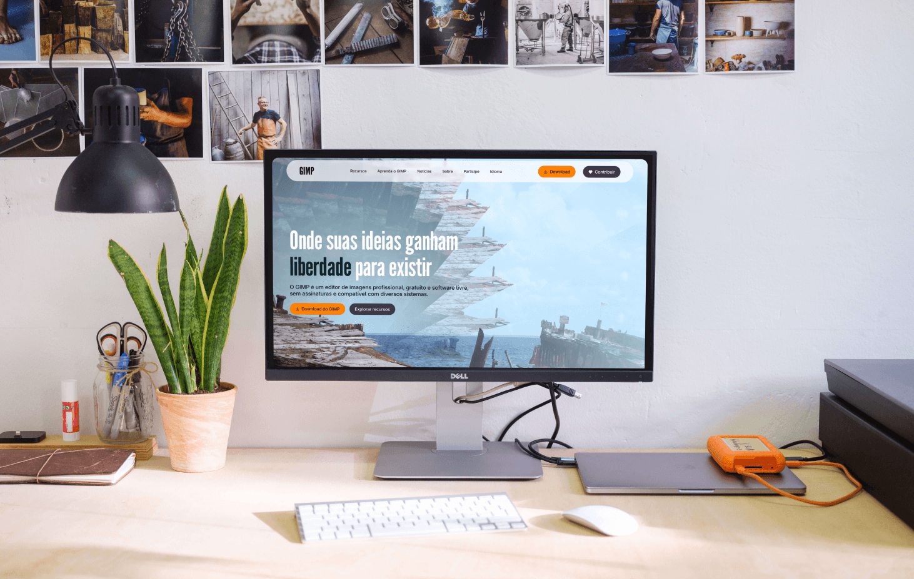
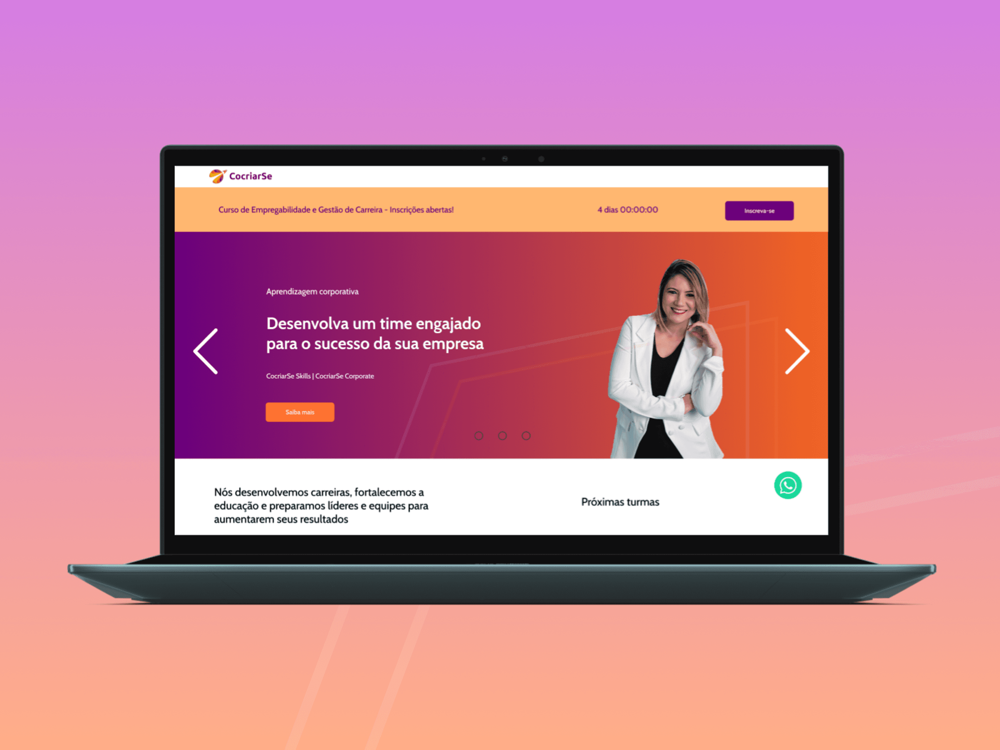
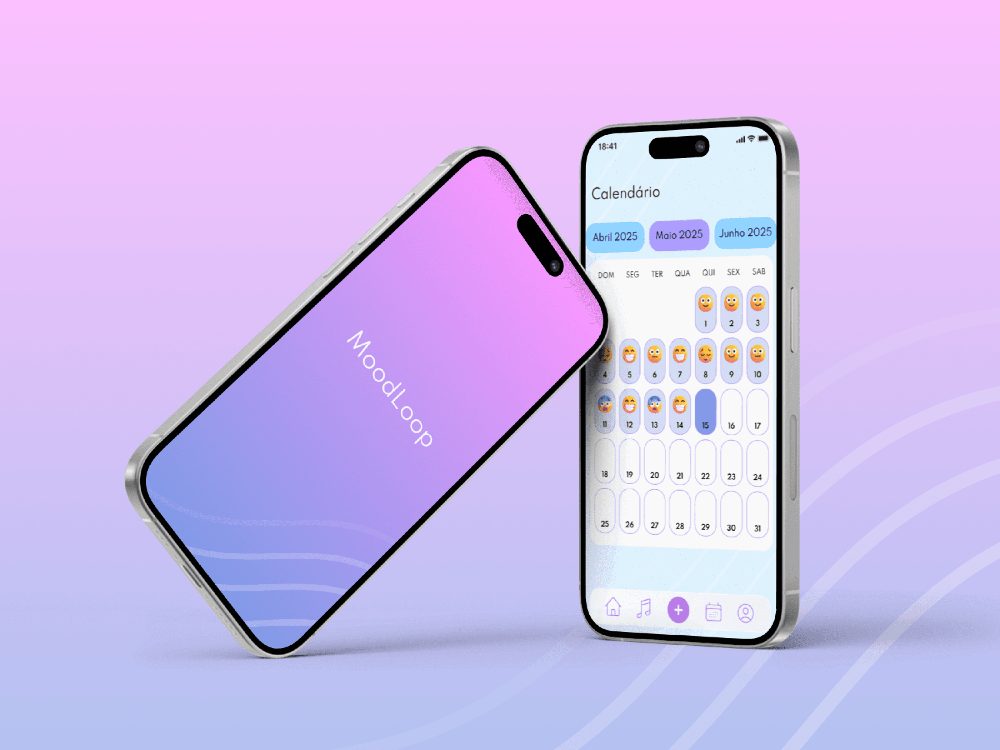

Pesquisa
Entendimento do contexto, usuários, concorrentes e objetivos.
UX/UI Designer
Cada projeto é pensado para comunicar com clareza, conectar com propósito e entregar valor real para pessoas e negócios.
Projetos em destaque

Redesenho focado em clareza, onboarding e fluxo de edição.

Catálogo digital para apresentar produtos e facilitar orçamentos.

Aplicativo para rotina de remédios com lembretes e acompanhamento.
Como eu trabalho
Entendimento do contexto, usuários, concorrentes e objetivos.
Arquitetura, jornadas, wireframes e priorização de conteúdo.
Telas responsivas, componentes, protótipo e refinamento visual.
Arquivo organizado, documentação e suporte para implementação.